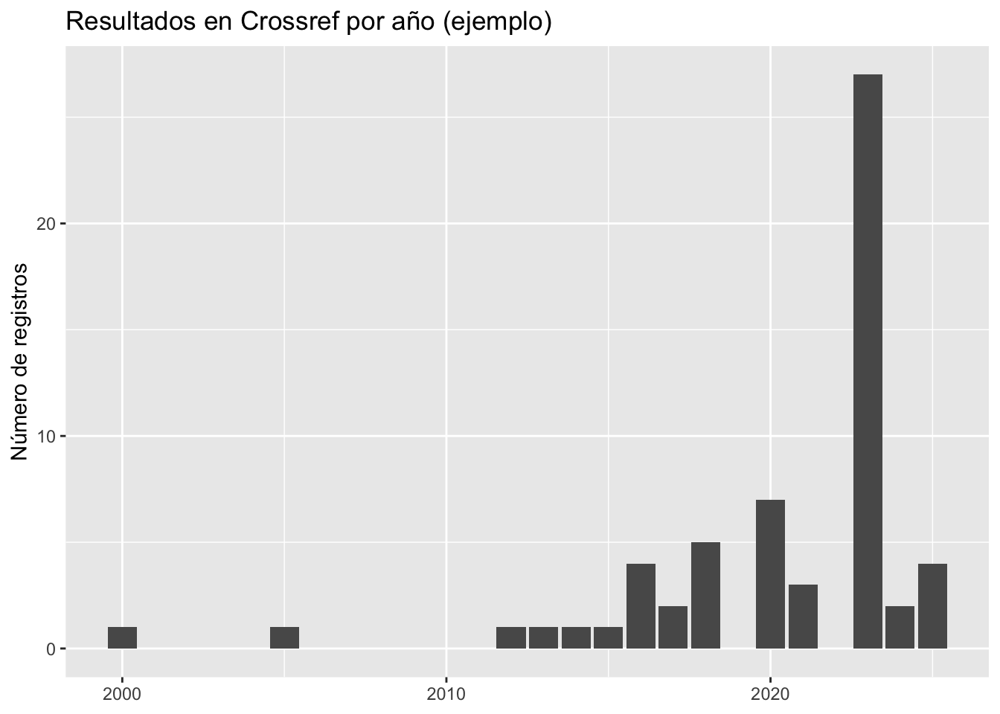

if (!requireNamespace("pacman", quietly = TRUE)) install.packages("pacman")
pacman::p_load(
rcrossref,
dplyr,
tidyr,
stringr,
purrr,
lubridate,
ggplot2
)Búsquedas académicas con {rcrossref}
Este documento muestra cómo usar el paquete {rcrossref} para buscar literatura académica (metadatos bibliográficos) a través de Crossref, una infraestructura ampliamente usada para DOIs y metadatos de publicaciones científicas.
Alcance: Crossref ofrece metadatos (títulos, autoría, DOI, revista, año, etc.). No siempre provee el texto completo.
1. Preparación
1.1 Instalar y cargar paquetes
1.2 Buenas prácticas: User-Agent
Crossref recomienda identificar el uso con un correo (sirve para contacto si hay problemas y puede mejorar estabilidad).
# Reemplaza por tu correo institucional
options(crr_email = "ana.escoto@politicas.unam.mx")2. ¿Qué se puede buscar con Crossref?
- Obras (works): artículos, capítulos, libros, reportes con DOI (y a veces sin DOI).
- Revistas (journals): metadatos de revistas.
- Miembros (members): editoriales u organizaciones registradas.
En ciencias sociales, lo más útil suele ser buscar works y filtrar por: - año (from-pub-date, until-pub-date) - tipo (type: journal-article, book-chapter, book, posted-content) - idioma (limitado; no siempre está presente) - editorial, revista, o DOI/ISSN (si se conoce)
3. Búsqueda básica por tema (query)
La función más usada es cr_works().
res <- cr_works(query = "economía del cuidado", limit = 5)res$data %>%
names() [1] "created" "deposited" "doi"
[4] "indexed" "issued" "member"
[7] "prefix" "publisher" "score"
[10] "source" "reference.count" "references.count"
[13] "is.referenced.by.count" "title" "type"
[16] "url" "author" "published.online"
[19] "language" "license" "subtitle"
[22] "abstract" "container.title" "issn"
[25] "issue" "page" "volume"
[28] "short.container.title" "link" "reference"
[31] "update.policy" "assertion" `%||%` <- function(x, y) if (is.null(x)) y else x
res$data %>%
transmute(
titulo = title,
anio = issued %||% published.online,
doi = doi,
revista = container.title
)# A tibble: 5 × 4
titulo anio doi revista
<chr> <chr> <chr> <chr>
1 Conciliación, corresponsabilidad y economía del cuidado 2021… 10.6… <NA>
2 Personas trabajadoras migrantes en la economía del cuidado 2025 10.5… <NA>
3 Start.CareCoop 2025 10.5… <NA>
4 La idea de la “economía del cuidado” como creadora de val… 2023… 10.2… Tiempo…
5 Economía del cuidado: comparación de las encuestas de uso… 2022… 10.2… Socied…Nota: algunos campos pueden venir vacíos. Por eso conviene limpiar y estandarizar.
3.1 Limpiar resultados (utilidad práctica)
limpiar_works <- function(df) {
df %>%
transmute(
title = map_chr(title, ~ .x[1] %||% NA_character_),
journal = map_chr(`container.title`, ~ .x[1] %||% NA_character_),
doi = doi,
url = url,
date = issued %||% published.online,
type = type,
publisher = publisher
) %>%
mutate(year= year(as_date(date)))
}
df <- limpiar_works(res$data)
df# A tibble: 5 × 8
title journal doi url date type publisher year
<chr> <chr> <chr> <chr> <chr> <chr> <chr> <dbl>
1 Conciliación, corresponsabili… <NA> 10.6… http… 2021… post… The Conv… 2021
2 Personas trabajadoras migrant… <NA> 10.5… http… 2025 book OIT NA
3 Start.CareCoop <NA> 10.5… http… 2025 post… Internat… NA
4 La idea de la “economía del c… Tiempo… 10.2… http… 2023… jour… Universi… 2023
5 Economía del cuidado: compara… Socied… 10.2… http… 2022… jour… Universi… 20226. Filtrar por revista (container-title) o ISSN
Si te interesa una revista específica:
rev <- cr_works(
query = "care economy",
filter = c(container_title = "Feminist Economics", from_pub_date = "2010-01-01"),
limit = 10
)
limpiar_works(rev$data) %>%
select(year, title, journal, doi) %>%
arrange(desc(year))# A tibble: 10 × 4
year title journal doi
<dbl> <chr> <chr> <chr>
1 2025 Toward a Caring Economy? The Role of Care in the Europea… Femini… 10.1…
2 2024 Dispossession after War: A Feminist Political Economy Pe… Femini… 10.1…
3 2021 A Care-Led Recovery From Covid-19: Investing in High-Qua… Femini… 10.1…
4 2020 Who's the Boss? The Political Economy of Unpaid Care Wor… Femini… 10.1…
5 2020 Political Economy of Cross-Border Marriage: Economic Dev… Femini… 10.1…
6 2018 The Care Economy in Post-Reform China: Feminist Research… Femini… 10.1…
7 2018 The Glass Ceiling Puzzle, Legal Institutions, and the Sh… Femini… 10.1…
8 2017 The Monetized Economy Versus Care and the Environment: D… Femini… 10.1…
9 2015 Men, Women, Money, and Morality: The Development of Chin… Femini… 10.1…
10 2015 Gender Norms and the Economy: Insights from Social Resea… Femini… 10.1…Si conoces el ISSN:
rev2 <- cr_works(filter = c(issn = "1354-5701", from_pub_date = "2018-01-01"), limit = 10)
limpiar_works(rev2$data) %>%
select(year, title, journal, doi) %>%
arrange(desc(year))Warning: There was 1 warning in `mutate()`.
ℹ In argument: `year = year(as_date(date))`.
Caused by warning:
! 1 failed to parse.# A tibble: 10 × 4
year title journal doi
<dbl> <chr> <chr> <chr>
1 2025 Structural Infertilities: Childbearing and Reproductive … Femini… 10.1…
2 2023 The Political Economy of Patriarchy in the Global South Femini… 10.1…
3 2023 Determinants of Wealth Outcomes in Female-Headed Househo… Femini… 10.1…
4 2022 The Evolution of Gender Wealth Inequality in the United … Femini… 10.1…
5 2021 Human Mobility, COVID-19, and Policy Responses: The righ… Femini… 10.1…
6 2021 Parental Education and Increased Child Survival in Madag… Femini… 10.1…
7 2019 Employment Status and Contraceptive Choices of Women Wit… Femini… 10.1…
8 2019 Why Can’t I keep my Surname? The Fairness and Welfare of… Femini… 10.1…
9 2018 “Our Lands are Our Lives”: Gendered Experiences of Resis… Femini… 10.1…
10 NA Economic Citizenship: Neoliberal Paradoxes of Empowerment Femini… 10.1…7. Recuperar un registro por DOI
Cuando ya tienes el DOI, esto es lo más directo.
one <- cr_works(dois = "10.1038/nphys1170") # ejemplo (cambia por uno real de tu tema)
one$data %>% limpiar_works()# A tibble: 1 × 8
title journal doi url date type publisher year
<chr> <chr> <chr> <chr> <chr> <chr> <chr> <dbl>
1 Measured measurement Nature Physics 10.1038… http… 2009… jour… Springer… 20208. Descargar más resultados (cursor) y evitar sesgos de los primeros 20
Para búsquedas grandes, usa cursor = "*". Esto permite paginar de forma robusta.
# Ejemplo: traer 50 registros en bloques
tema <- "gender wage gap"
cursor <- "*"
acum <- list()
for (i in 1:5) {
out <- cr_works(query = tema, cursor = cursor, cursor_max = 100, limit = 10)
acum[[i]] <- out$data
cursor <- out$meta$`next-cursor`
}
big <- bind_rows(acum) %>% limpiar_works()Warning: There was 1 warning in `mutate()`.
ℹ In argument: `year = year(as_date(date))`.
Caused by warning:
! 44 failed to parse.big %>% count(year, sort = TRUE)# A tibble: 15 × 2
year n
<dbl> <int>
1 NA 81
2 2023 26
3 2020 7
4 2018 5
5 2016 4
6 2025 4
7 2021 3
8 2017 2
9 2024 2
10 2000 1
11 2005 1
12 2012 1
13 2013 1
14 2014 1
15 2015 19. Visualización rápida: producción por año
big %>%
filter(!is.na(year)) %>%
count(year) %>%
ggplot(aes(x = year, y = n)) +
geom_col() +
labs(
title = "Resultados en Crossref por año (ejemplo)",
x = NULL,
y = "Número de registros"
)
10. Exportar una bibliografía mínima
Crossref no es un gestor bibliográfico completo, pero puedes exportar una tabla para revisión.
salida <- big %>%
select(year, title, journal, doi, url) %>%
arrange(desc(year))
readr::write_csv(salida, "crossref_resultados.csv")12. Referencia del paquete
{rcrossref}: https://docs.ropensci.org/rcrossref/ (documentación del paquete)- Crossref API: https://api.crossref.org/ (documentación general)